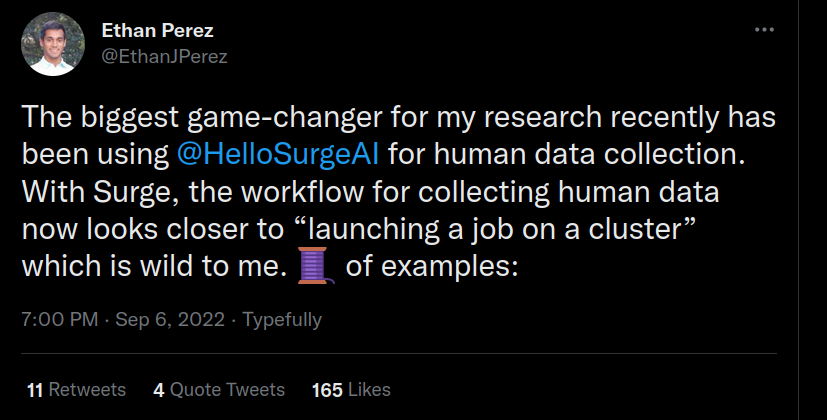

One-paragraph summary: we (two recent graduates) spent about half of the summer exploring the idea of starting an organisation producing custom human-generated datasets for AI alignment research. Most of our time was spent on customer interviews with alignment researchers to determine if they have a pressing need for such a service. We decided not to continue with this idea, because there doesn’t seem to be a human-generated data niche (unfilled by existing services like Surge) that alignment teams would want outsourced.
In more detail: The idea of a human datasets organisation was one of the winners of the Future Fund project ideas competition, still figures on their list of project ideas, and had been advocated before then by some people, including Beth Barnes. Even though we ended up deciding against, we think this was a reasonable and high-expected-value idea for these groups to advocate at the time.
Human-generated data is often needed for ML projects or benchmarks if a suitable dataset cannot be e.g. scraped from the web, or if human feedback is required. Alignment researchers conduct such ML experiments, but sometimes have different data requirements than standard capabilities researchers. As a result, it seemed plausible that there was some niche unfilled by the market to help alignment researchers solve problems related to human-generated datasets. In particular, we thought - and to some extent confirmed - that the most likely such niche is human data generation that requires particularly competent or high-skill humans. We will refer to this as high-skill (human) data.
We (Matt & Rudolf) went through an informal co-founder matching process along with four other people and were chosen as the co-founder pair to explore this idea. In line with standard startup advice, our first step was to explore whether or not there is a concrete current need for this product by conducting interviews with potential customers. We talked to about 15 alignment researchers, most of them selected on the basis of doing work that requires human data. A secondary goal of these interviews was to build better models for the future importance and role of human feedback in alignment.
Getting human-generated data does indeed cost many of these researchers significant time and effort. However, we think to a large extent this is because dealing with humans is inherently messy, rather than existing providers doing a bad job. Surge AI in particular seems to offer a pretty good and likely improving service. Furthermore, many companies have in-house data-gathering teams or are in the process of building them.
Hence we have decided to not further pursue this idea.
Other projects in the human data generation space may still be valuable, especially if the importance of human feedback in ML continues to increase, as we expect. This might include people specializing on human data as a career.
The types of factors that are most important for doing human dataset provision well include: high-skill contractors, fast iteration, and high bandwidth communication and shared understanding between the research team, the provider organisation and the contractors.
We are keen to hear other people’s thoughts, and would be happy to talk or to share more notes and thoughts with anyone interested in working on this idea or a similar one in the future.
Theory of Change
A major part of AI alignment research requires doing machine learning (ML) research, and ML research in turn requires training ML models. This involves expertise and execution ability in three broad categories: algorithms, compute, and data, the last of which is very neglected by EAs.
We expect training on data from human feedback to become an increasingly popular and very powerful tool in mainstream ML (see below). Furthermore, many proposals for alignment (for example: reinforcement learning from human feedback (RLHF) and variants like recursive reward modelling, iterated amplification, and safety via debate) would require lots of human interaction or datasets based on human-generated data.
While many services (most notably Surge) exist for finding labour to work on data generation for ML models, it seems plausible that an EA-aligned company could add significant value because:
- Markets may not be efficient enough to fill small niches that are more important to alignment researchers than other customers; high-skill human data that requires very competent crowdworkers may be one such example. If alignment researchers can get it at all, it might be very expensive.
- We have a better understanding of alignment research agendas, and this might help. This may allow us to make better-informed decisions on many implementation details with less handholding, thereby saving researchers time.
- We would have a shared goal with our customers: reducing AI x-risk. Though profit motives already provide decent incentives to offer a good service, mission alignment helps avoid adversarial dynamics, increases trust, and reduces friction in collaboration.
- An EA-led company may be more willing to make certain strategic moves that go against its profit incentives; e.g. investing heavily into detecting a model’s potential attempts to deceive the crowdworkers, even when it’s hard for outsiders to tell whether such monitoring efforts are sincere and effective (and thus customers may not be willing to pay for it). Given that crowdworkers might provide a reward signal, they could be a key target for deceptive AIs.
Therefore, there is a chance that an EA-led human data service that abstracts out some subset of dataset-related problems (e.g. contractor finding, instruction writing/testing, UI and pipeline design/coding, experimentation to figure out best practices and accumulate that knowledge in one place) would:
- save the time of alignment researchers, letting them make more progress on alignment; and
- reduce the cost (in terms of time and annoying work) required to run alignment-relevant ML experiments, and therefore bring more of them below the bar at which it makes sense to run them, and thus increasing the number of such experiments that are run.
In the longer run, benefits of such an organisation might include:
- There is some chance that we could simply outcompete existing ML data generation companies and be better even in the cases where they do provide a service; this is especially plausible for relatively niche services. In this scenario we’d be able to exert some marginal influence over the direction of the AI field, for example by only taking alignment-oriented customers. This would amount to differential development of safety over capabilities. Beyond only working with teams that prioritise safety, we could also pick among self-proclaimed “safety researchers”. It is common for proclaimed safety efforts to be accused of helping more with capabilities than alignment by other members of the community.
- There are plausibly critical actions that might need to be taken for alignment, possibly quickly during “crunch-time”, that involve a major (in quality or scale) data-gathering project (or something like large-scale human-requiring interpretability work, that makes use of similar assets, like a large contractor pool). At such a time it might be very valuable to have an organisation committed to x-risk minimisation with the competence to carry out any such project.
Furthermore, if future AIs will learn human values from human feedback, then higher data quality will be equivalent to a training signal that points more accurately at human values. In other words, higher quality data may directly help with outer alignment (though we're not claiming that it could realistically solve it on its own). In discussions, it seemed that Matt gave this argument slightly more weight than Rudolf.
While these points are potentially high-impact, we think that there are significant problems with starting an organisation mainly to build capacity to be useful only at some hypothetical future moment. In particular, we think it is hard to know exactly what sort of capacity to build (and the size of the target in type-of-capacity space might be quite small), and there would be little feedback that the organisation could improve or course-correct based on.
More generally, both of us believe that EA is right now partly bottlenecked by people who can start and scale high-impact organisations, which is a key reason why we’re considering entrepreneurship. This seems particularly likely given the large growth of the movement.
What an org in this space may look like
Providing human datasets
The concept we most seriously considered was a for-profit that would specialise in meeting the specific needs of alignment researchers, probably by focusing on very high-skill human data. Since this niche is quite small, the company could offer a very custom-tailored service. At least for the first couple years, this would probably mean both of us having a detailed understanding of the research projects and motivations of our customers. That way, we could get a lot of small decisions right, without the researchers having to spend much time on it. We might be especially good at that compared to competitors, given our greater understanding of alignment.
Researching enhanced human feedback
An alternative we considered was founding a non-profit that would research how to enhance human feedback. See this post by Ajeya Cotra for some ideas on what this kind of research could look like. The central question is whether and how you can combine several weak training signals into a stronger more accurate one. If this succeeded, maybe (enhanced) human feedback could become a more accurate (and thereby marginally safer) signal to train models on.
We decided against this for a number of reasons:
- Currently, neither of us has more research experience than an undergraduate research project.
- We thought we could get a significant fraction of the benefits of this kind of research even if we did the for-profit version, and plausibly even more valuable expertise.
- First of all, any particular experiment that funders would have liked to see, they could have paid us to do, although we freely admit that this is very different from someone pushing forward their own research agenda.
- More importantly, we thought a lot of the most valuable expertise to be gained would come in the form of tacit knowledge and answers to concrete boring questions that are not best answered by doing “research” on them, but rather by iterating on them while trying to offer the best product (e.g. “Where do you find the best contractors?”, “How do you incentivize them?”, “What’s the best way to set up communication channels?”).
- It is our impression that Ought pivoted away from doing abstract research on factored cognition and toward offering a valuable product for related reasons.
- This topic seems plausibly especially tricky to research (though some people we’ve spoken to disagreed):
- At least some proposed such experiments would not involve ML models at all. We fear that this might make it especially easy to fool ourselves into thinking some experiment might eventually turn out to be useful when it won’t. More generally, the research would be pretty far removed from the end product (very high quality human feedback). In the for-profit case on the other hand, we could easily tell whether alignment teams were willing to pay for our services and iteratively improve.
For-profit vs non-profit
We can imagine two basic funding models for this org:
- either we’re a nonprofit directly funded by EA donors and offering free or subsidized services to alignment teams;
- or we’re a for-profit, paid by its customers (ie alignment teams).
Either way, a lot of the money will ultimately come from EA donors (who fund alignment teams.)
The latter funding mechanism seems better; “customers paying money for a service” leads to the efficient allocation of resources by creating market structures. They have a clear incentive to spend the money well. On the other hand, “foundations deciding what services are free” is more reminiscent of planned economies and distorts markets. To a first approximation, funders should give alignment orgs as much money as they judge appropriate and then alignment orgs should exchange it for services as they see fit.
A further reason is that a non-profit is legally more complicated to set up, and imposes additional constraints on the organisation.
Should the company exclusively serve alignment researchers?
We also considered founding a company with the ambition to become a major player in the larger space of human data provision. It would by default serve anyone willing to pay us and working on something AGI-related, rather than just alignment researchers. Conditional on us being able to successfully build a big company, this would have the following upsides:
- Plausibly one of the main benefits of founding a human data gathering organisation is to produce EAs and an EA org that have deep expertise in handling and producing high-skill human data in significant quantities. That might prove useful around “crunch time”, e.g. when some project aims to create competitive but safe AGI and needs this expertise. Serving the entire market could scale to a much larger company enabling us to gain expertise at higher scales.
- Operating a large company would also come with some degree of market power. Any company with paying customers has some amount of leverage over them: first of all just because of switching costs, but also because the product it offers might be much better than the next-best alternative. This could allow us to make some demands, e.g. once we’re big and established, announce we’d only work with companies that follow certain best practices.
On the other hand, building a big successful company serving anyone willing to pay might come with some significant downsides as well.
- First, and most straightforwardly, it is probably much harder than filling a small niche (just meeting the specific needs of alignment researchers), making us less likely to succeed. A large number of competitors exist and as described in this section, some of them (esp. Surge) seem pretty hard to beat. Since this is an already big and growing market, there is an additional efficient markets reason to assume this is true a priori.
- Secondly, and perhaps more importantly, such a company might accelerate capabilities (more on this below).
Furthermore, it might make RLHF (Reinforcement Learning from Human Feedback) in particular more attractive. Depending on one’s opinions about RLHF and how it compares to other realistic alternatives, one might consider this a strong up- or downside.
Approach
The main reason companies fail is that they build a product that customers don’t want. For for-profits, the signal is very clear: either customers care enough to be willing to pay hard cash for the product/service, or they don’t. For non-profits, the signal is less clear, and therefore nonprofits can easily stick around in an undead state, something that is an even worse outcome than the quick death of a for-profit because of resource (mis)allocation and opportunity costs. As discussed, it is not obvious which structure we should adopt for this organisation, though for-profit may be a better choice on balance. However, in all cases it is clear that the organisation needs to solve a concrete problem or provide clear value to exist and be worth existing. This does not mean that the value proposition needs to be certain; we would be happy to take a high-risk, high-reward bet, and generally support hits-based approaches to impact both in general and for ourselves.
An organisation is unlikely to do something useful to its customers without being very focused on customer needs, and ideally having tight feedback cycles.
The shortest feedback loops are when you’re making a consumer software product where you can prototype quickly (including with mockups), and watch and talk to users as they use the core features, and then see if the user actually buys the product on the spot. A datasets service differs from this ideal feedback mode in a number of ways:
- The product is a labour-intensive process, which means the user cannot quickly use the core features and we cannot quickly simulate them.
- The actual service requires either a contractor pool or (potentially at the start) the two of us spending a number of hours per request generating data.
- There is significant friction to getting users to use the core feature (providing a dataset), since it requires specification of a dataset from a user, which takes time and effort.
Therefore, we relied on customer interviews with prospective customers. The goal of these interviews was to talk to alignment researchers who work with data, and figure out if external help with their dataset projects would be of major use to them.
Our approach to customer interviews was mostly based on the book The Mom Test, which is named after the idea that your customer interview questions should be concrete and factual enough that even someone as biased as your own mom shouldn’t be able to give you a false signal about whether the idea is actually good. Key lessons emphasised by The Mom Test include emphasising:
- factual questions about the past over hypothetical questions for the future;
- In particular, questions about concrete past and current efforts spent solving a problem rather than questions about current or future wishes for solving a problem
- questions that get at something concrete (e.g. numbers); and
- questions that prompt the customer to give information about their problems and priorities without prompting them with a solution.
We wanted to avoid the failure mode where lots of people tell us something is important and valuable in the abstract, without anyone actually needing it themselves.
We prepared a set of default questions that roughly divided into:
- A general starting question prompting the alignment researcher to describe the biggest pain points and bottlenecks they face in their work, without us mentioning human data.
- Various questions about their past and current dataset-related work, including what types of problems they encounter with datasets, how much of their time these problems take, and steps they took to address these problems.
- Various questions on their past experiences using human data providers like Surge, Scale, or Upwork, and specifically about any things they were unable to accomplish because of problems with such services.
- In some cases, more general questions about their views on where the bottlenecks for solving alignment are, views on the importance of human data or tractability of different data-related proposals, etc.
- What we should’ve asked but didn’t, and who else we should talk to.
Point 4 represents the fact that in addition to being potential customers, alignment researchers also doubled as domain experts. The weight given to the questions described in point 4 varied a lot, though in general if someone was both a potential customer and a source of data-demand-relevant alignment takes, we prioritised the customer interview questions.
In practice, we found it easy to arrange meetings with alignment researchers; they generally seemed willing to talk to people who wanted input on their alignment-relevant idea. We did customer interviews with around 15 alignment researchers, and had second meetings with a few. For each meeting, we prepared beforehand a set of questions tweaked to the particular person we were meeting with, which sometimes involved digging into papers published by alignment researchers on datasets or dataset-relevant topics (Sam Bowman in particular has worked on a lot of data-relevant papers). Though the customer interviews were by far the most important way of getting information on our cruxes, we found the literature reviews we carried out to be useful too. We are happy to share the notes from the literature reviews we carried out; please reach out if this would be helpful to you.
Though we prepared a set of questions beforehand, in many meetings - including often the most important or successful ones - we often ended up going off script fairly quickly.
Something we found very useful was that, since there were two of us, we could split the tasks during the meeting into two roles (alternating between meetings):
- One person who does most of the talking, and makes sure to be focused on the thread of the conversation.
- One person who mostly focuses on note-taking, but also pipes in if they think of an important question to ask or want to ask for clarification.
Key crux: demand looks questionable, Surge seems pretty good
Common startup advice is to make sure you have identified a very strong signal of demand before you start building stuff. That should look something like someone telling you that the thing you’re working on is one of their biggest bottlenecks and that they can’t wait to pay you asap so you solve this problem for them. “Nice to have” doesn’t cut it. This is in part because working with young startups is inherently risky, so you need to make up for that by solving one of their most important problems.
In brief, we don’t think this level of very strong demand currently exists, though there were some weaker signals that looked somewhat promising. There are many existing startups that offer human feedback already. Surge AI in particular was brought up by many people we talked to and seems to offer quite a decent service that would be hard to beat.
Details about Surge
Surge is a US-based company that offers a service very similar to what we had in mind, though they are not focused on alignment researchers exclusively. They build data-labelling and generation tools and have a workforce of crowdworkers.
They’ve worked with Redwood and the OpenAI safety team, both of which had moderately good experiences with them. More recently, Ethan Perez’s team have worked with Surge too; he seems to be very satisfied based on this Twitter thread.

Collaboration with Redwood
Surge has worked with Redwood Research on their paper about adversarial training. This is one of three case studies on Surge’s website, so we assume it’s among the most interesting projects they’ve done so far. The crowdworkers were tasked with coming up with prompts that would cause the model to output text in which someone got injured. Furthermore, crowdworkers also classified whether someone got injured in a given piece of text.
One person from Redwood commented that doing better than Surge seemed possible to them with “probably significant value to be created”, but “not an easy task”. They thought our main edge would have to be that we’d specialise on fuzzy and complex tasks needed for alignment; Surge apparently did quite well with those, but still with some room for improvement. A better understanding of alignment might lower chances of miscommunication. Overall, Redwood seems quite happy with the service they received.
Initially, Surge’s iteration cycle was apparently quite slow, but this improved over time and was “pretty good” toward the end.
Redwood told us they were quite likely to use human data again by the end of the year and more generally in the future, though they had substantial uncertainty around this. Their experience in working with human feedback overall was somewhat painful as we understood it. This is part of the reason they’re uncertain about how much human feedback they will use for future experiments, even though it’s quite a powerful tool. However, they estimated that friction in working with human feedback was mostly caused by inherent reasons (humans are inevitably slower and messier than code), rather than Surge being insufficiently competent.
Collaboration with OpenAI
OpenAI have worked with Surge in the context of their WebGPT paper. In that paper, OpenAI fine-tuned their language model GPT-3 to answer long-form questions. The model is given access to the web, where it can search and navigate in a text-based environment. It’s first trained with imitation learning and then optimised with human feedback.
Crowdworkers provided “demonstrations”, where they answered questions by browsing the web. They also provided “comparisons”, where they indicated which of two answers to the same question they liked better.
People from OpenAI said they had used Surge mostly for sourcing the contractors, while doing most of the project management, including building the interfaces, in-house. They were generally pretty happy with the service from Surge, though all of them did mention shortcomings.
One of the problems they told us about was that it was hard to get access to highly competent crowdworkers for consistent amounts of time. Relatedly, it often turned out that a very small fraction of crowdworkers would provide a large majority of the total data.
More generally, they wished there had been someone at Surge that understood their project better. Also, it might have been somewhat better if there had been more people with greater experience in ML, such that they could have more effectively anticipated OpenAI’s preferences — e.g. predict accurately what examples might be interesting to researchers when doing quality evaluation. However, organisational barriers and insufficient communication were probably larger bottlenecks than ML knowledge. At least one person from OpenAI strongly expressed a desire for a service that understood their motives well and took as much off their plate as possible in terms of hiring and firing people, building the interfaces, doing quality checks and summarising findings etc. It is unclear to us to what extent Surge could have offered these things if OpenAI hadn’t chosen to do a lot of these things in-house. One researcher suggested that communicating their ideas reliably was often more work than just doing it themselves. As it was, they felt that marginal quality improvement required significant time investment on their own part, i.e. could not be solved with money alone.
Notably, one person from OpenAI estimated that about 60% of the WebGPT team’s efforts were spent on various aspects of data collection. They also said that this figure didn’t change much after weighting for talent, though in the future they expect junior people to take on more disproportionate shares of this workload.
Finally, one minor complaint that was mentioned was the lack of transparency about contractor compensation.
How mission-aligned is Surge?
Surge highlight their collaboration with Redwood on their website as one of three case studies. In their blog post about their collaboration with Anthropic, the first sentence reads: “In many ways, alignment – getting models to align themselves with what we want, not what they think we want – is one of the fundamental problems of AI.”
On the one hand, they describe alignment as one of the fundamental problems of AI, which could indicate that they intrinsically cared about alignment. However, they have a big commercial incentive to say this. Note that many people would consider their half-sentence definition of alignment to be wrong (a model might know what we want, but still do something else).
We suspect that the heads of Surge have at least vaguepositive dispositions towards alignment. They definitely seem eager to work with alignment researchers, which might well be more important. We think it’s mostly fine if they are not maximally intrinsically driven, though mission alignment does add value as mentioned above.
Other competitors
We see Surge as the most direct competitor and have researched them by far in the most detail. But besides Surge, there are a large number of other companies offering similar services.
First, and most obviously, Amazon Mechanical Turk offers a very low quality version of this service and is very large. Upwork specialises in sourcing humans for various tasks, without building interfaces. ScaleAI is a startup with a $7B valuation --- they augment human feedback with various automated tools. OpenAI have worked with them. Other companies in this broad space include Hybrid (which Sam Bowman’s lab has worked with) and Invisible (who have worked with OpenAI). There are many more that we haven’t listed here.
In addition, some labs have in-house teams for data gathering (see here for more).
Data providers used by other labs
Ethan Perez’s and Sam Bowman’s labs at NYU/Anthropic have historically often built their own interfaces while using contractors from Upwork or undergrads, but they have been trialing Surge over the summer and seem likely to stick with them if they have a good experience. Judging from the Twitter thread linked above and asking Jérémy Scheurer (who works on the team and built the pre-Surge data pipeline) how they’ve found Surge so far, Surge is doing a good job.
Google has an internal team that provides a similar service, though DeepMind have used at least one external provider as well. We expect that it would be quite hard to get DeepMind to work with us, at least until we would be somewhat more established.
Generally, we get the impression that most people are quite happy with Surge. It’s worth also considering that it’s a young company that’s likely improving its service over time. We’ve heard that Surge iterates quickly, e.g. by shipping simple feature requests in two days. It’s possible that some of the problems listed above may no longer apply by now or in a few months.
Good signs for demand
One researcher we talked to said that there were lots of projects their team didn’t do, because gathering human feedback of sufficient quality was infeasible.
One of the examples this researcher gave was human feedback on code quality. This is implausible to do, because the time of software engineers is just too expensive. That problem is hard for a new org to solve.
Another example they gave seemed like it might be more feasible: for things like RLHF, they often choose to do pairwise comparisons between examples or multi-preferences. Ideally, they would want to get ratings, e.g. on a scale from 1 to 10. But they thought they didn’t trust the reliability of their raters enough to do this.
More generally, this researcher thought there were lots of examples where if they could copy any person on their team a hundred times to provide high-skill data, they could do many experiments that they currently can’t.
They also said that their team would be willing to pay ~3x of what they were paying currently to receive much higher-quality feedback.
Multiple other researchers we talked to expressed vaguely similar sentiments, though none quite as strong.
However, it’s notable that in this particular case, the researcher hadn’t worked with Surge yet.
The same researcher also told us about a recent project where they had spent a month on things like creating quality assurance examples, screening raters, tweaking instructions etc. They thought this could probably have been reduced a lot by an external org, maybe to as little as one day. Again, we think Surge may be able to get them a decent part of the way there.
Labs we could have worked with
We ended up finding three projects that we could have potentially worked on:
- A collaboration with Ought --- they spend about 15 hours a week on data-gathering and would have been happy to outsource that to us. If it had gone well, they might also have done more data-gathering in the longterm (since friction is lower if it doesn’t require staff time). We decided not to go ahead with this project since we weren’t optimistic enough about demand from other labs being bigger once we had established competence with Ought and the project itself didn’t seem high upside enough.
- Attempt to get the Visible Thoughts bounty by MIRI. We decided against this for a number of reasons. See more of our thinking about Visible Thoughts below.
- Potentially a collaboration with Owain Evans on curated datasets for alignment.
We think the alignment community is currently relatively tight-knit. e.g. researchers often knew about other alignment teams’ experiences with Surge from conversations they had had with them. Hence, we were relatively optimistic that conditional on there being significant demand for this kind of service, doing a good job on one of the projects above would quickly lead to more opportunities.
Visible Thoughts
In November 2021, MIRI announced the Visible Thoughts (VT) project bounty. In many ways VT would be a good starting project for an alignment-oriented dataset provider, in particular because the bounty is large (up to $1.2M) and because it is ambitious enough that executing on it would provide a strong learning signal to us and a credible signal to other organisations we might want to work with. However, on closer examination of VT, we came to the conclusion that it is not worth it for us to work on it.
The idea of VT is to collect a dataset of 100 runs of fiction of a particular type (“dungeon runs”, an interactive text-based genre where one party, called the “dungeon master” and often an AI, offers descriptions of what is happening, and the other responds in natural language with what actions they want to take), annotated with a transcript of some of the key verbal thoughts that the dungeon master might be thinking as they decide what happens in the story world. MIRI hopes that this would be useful for training AI systems that make their thought processes legible and modifiable.
In particular, a notable feature of the VT bounty is the extreme run lengths that it asks for: to the tune of 300 000 words for each of the runs (for perspective, this is the length of A Game of Thrones, and longer than the first three Harry Potter books combined). A VT run is much less work than a comparable-length book - the equivalent of a rough unpolished first-draft (with some quality checks) would likely be sufficient - but producing one such run would still probably require at least on the order of 3 months of sequential work time from an author. We expect the pool of people willing to write such a story for 3 months is significantly smaller than the pool of people who would be willing to complete, say, a 30 000 word run, and that the high sequential time cost increases the amount of time required to generate the same number of total words. We also appear to have different ideas on how easy it is to fit a coherent story, for the relevant definition of coherent, into a given number of words. Note that to compare VT word counts to lengths of standard fiction without the written-out thoughts from the author, the VT word count should be reduced by a factor of 5-6.
Concerns about the length are raised in the comments section, to which Eliezer Yudkowksy responded. His first point, that longer is easier to write per step, may be true, especially as we also learned (by email with Nate Soares and Aurelien Cabanillas) that in MIRI’s experience “authors that are good at producing high quality steps are also the ones who don't mind producing many steps”. In particular because of that practical experience, we think it is possible we overestimated the logistical problems caused by the length. MIRI also said they would likely accept shorter runs too if they satisfied their other criteria.
In a brief informal conversation with Rudolf during EAG SF, Eliezer emphasised the long-range coherence point in particular. However, they did not come to a shared understanding of what type of “long-range coherence” is meant.
Even more than these considerations, we are sceptical about the vague plans for what to do given a VT dataset. A recurring theme from talking to alignment researchers who work with datasets was that inventing and creating a good dataset is surprisingly hard, and generally involves having a clear goal of what you’re going to use the dataset for. It is possible the key here is the difference in our priors for how likely a dataset idea is to be useful.
In addition, we have significant concerns about undertaking a major project based on a bounty whose only criterion is the judgement of one person (Eliezer Yudkowsky), and undertaking such a large project as our first project.
Other cruxy considerations
Could we make a profit / get funding?
One researcher from OpenAI told us he thought it would be hard to imagine an EA data-gathering company making a profit because costs for individual projects would always be quite high (requiring several full-time staff), and total demand was probably not all that big.
In terms of funding, both of us were able to spend time on this project because of grants from regrantors in the Future Fund regrantor program. Based on conversations with regrantors, we believe we could’ve gotten funding to carry out an initial project if we had so chosen.
Will human feedback become a much bigger deal? Is this a very quickly growing industry?
Our best guess is yes. For example, see this post by Ajeya Cotra which outlines how we could get to TAI by training on Human Feedback on Diverse Tasks (HFDT).
She writes: “HFDT is not the only approach to developing transformative AI, and it may not work at all. But I take it very seriously, and I’m aware of increasingly many executives and ML researchers at AI companies who believe something within this space could work soon.”
In addition, we have also had discussions with at least one other senior AI safety researcher whom we respect and who thought human feedback was currently irrationally neglected by mainstream ML; they expected it to become much more wide-spread and to be a very powerful tool.
If that’s right, then providing human feedback will likely become important and economically valuable.
This matters, because operating a new company in a growing industry is generally much easier and more likely to be successful. We think this is true even if profit isn’t the main objective.
Would we be accelerating capabilities?
Our main idea was to found a company (or possibly non-profit) that served alignment researchers exclusively. That could accelerate alignment differentially.
One problem is that it’s not clear where to draw this boundary. Some alignment researchers definitely think that other people who would also consider themselves to be alignment researchers are effectively doing capabilities work. This is particularly true of RLHF.
One mechanism worth taking seriously if we worked with big AI labs to make their models more aligned by providing higher quality data is that the models might merely appear surface-level aligned. “Make the data higher quality” might be a technique that scales poorly as capabilities ramp up. So it risks creating a false sense of security. It would also clearly improve the usefulness of current-day models and hence, it risks increasing investment levels too.
We don’t currently think the risk of surface-level alignment is big enough to outweigh the benefits. In general, we think that a good first-order heuristic that helps the field stay grounded in reality would be that whatever improves alignment in current models is useful to explore further and invest resources into. It seems like a good prior that such things would also be valuable in the future (even if it’s possible that new additional problems may arise, or such efforts aren’t on the path to a future alignment solution). See Nate Soares’ post about sharp left turns to get a contradicting view on this.
Is it more natural for this work to be done in-house in the longterm? Especially at big labs/companies.
We expect that human data gathering is likely to become very important and that it benefits from understanding the relevant research agenda well. So maybe big companies will want to do this internally, instead of relying on third-party suppliers?
That seems quite plausible to us and to some extent it’s happening already. Our understanding is that Anthropic is hiring an internal team to do human data gathering. DeepMind has access to Google’s crowdworker service. OpenAI have worked with multiple companies, but they also have at least one in-house specialist for this kind of work and are advertising multiple further jobs on the human data team here. They’re definitely considering moving more of this work in-house, but it’s unclear to us to what extent that’s going to happen and we have received somewhat contradicting signals regarding OpenAI safety team members’ preferences on this.
So a new EA org would face stiff competition, not only from other external providers, but also from within companies.
Of course, smaller labs will most likely always have to rely on external providers. Hence, another cruxy consideration is how much small labs matter. Our intuition is that they matter much less than bigger labs (since the latter have access to the best and biggest models).
Creating redundancy of supply and competition
Even if existing companies are doing a pretty good job at serving the needs of alignment researchers, there’s still some value in founding a competitor.
First, competition is good. Founding a competitor puts pressure on existing providers to keep service quality high, work on improving their products, and margins low. Ironically, part of the value of founding this company would thus flow through getting existing companies to try harder to offer the best product.
Second, it creates some redundancy. What if Surge pivots? What if their leadership changes or they become less useful for some other reason? In those worlds it might be especially useful to have a “back-up” company.
Both of these points have been mentioned to us as arguments in favour of founding this org. We agree that these effects are real and likely point in favour of founding the org. However, we don’t think these factors carry very significant weight relative to our opportunity costs, especially given that there are already many start-ups working in this space.
Adding a marginal competitor can only affect a company’s incentives so much. And in the worlds where we’d be most successful such that all alignment researchers were working with us, we might cause Surge and others to pivot away from alignment researchers, instead of getting them to try harder.
The redundancy argument only applies in worlds in which the best provider ceases to exist; maybe that’s 10% likely. And then the next best alternative is likely not all that bad. Competitors are plentiful and even doing it in-house is feasible. Hence, it seems unlikely to us that the expected benefit here is very large after factoring in the low probability of the best provider disappearing.
Other lessons
Lessons on human data gathering
In the process of talking to lots of experts about their experiences in working with human data, we learned many general lessons about data gathering. This section presents some of those lessons, in roughly decreasing order of importance.
Iteration
Many people emphasized to us that working with human data rarely looks like having a clean pipeline from requirements design to instruction writing to contractor finding to finished product. Rather, it more often involves a lot of iteration and testing, especially regarding what sort of data the contractors actually produce. While some of this iteration may be removed by having better contractors and better knowledge of good instruction-writing, the researchers generally view the iteration as a key part of the research process, and therefore prize
- ease of iteration (especially time to get back with a new batch of data based on updated instructions); and
- high-bandwidth communication with the contractors and whoever is writing the instructions (often both are done by the researchers themselves).
This last point holds to the point that it is somewhat questionable whether an external provider (rather than e.g. a new team member deeply enmeshed in the context of the research project) could even be a good fit for this need.
The ideal pool of contractors
All of the following features matter in a pool of contractors:
- Competence, carefulness, intelligence, etc. (sometimes expertise). It is often ideal if the contractors understand the experiment.
- Number of contractors
- Quick availability and therefore low latency for fulfilling requests
- Consistent availability (ideally full-time)
- Even distribution of contributions across contractors (ie it shouldn’t be the case that 20% of the contractors provide 80% of the examples).
Quality often beats quantity for alignment research
Many researchers told us that high-quality, high-skill data is usually more important and more of a bottleneck than just a high quantity of data. Some of the types of projects where current human data generation methods are most obviously deficient are cases where a dataset would need epistemically-competent people to make subtle judgments, e.g. of the form “how true is this statement?” or “how well-constructed was this study?” As an indication of reference classes where the necessary epistemic level exists, the researcher mentioned subject-matter experts in their domain, LessWrong posters, and EAs.
A typical data gathering project needs UX-design, Ops, ML, and data science expertise
These specialists might respectively focus on the following:
- Designing the interfaces that crowdworkers interact with. (UX-expert/front-end web developer)
- Managing all operations, including hiring, paying, managing, and firing contractors, communicating with them and the researchers etc. (ops expert)
- Helping the team make informed decisions about the details of the experimental design, while minimizing time costs for the customer. The people we spoke to usually emphasized ML-expertise more than alignment expertise. (ML-expert)
- Meta-analysis of the data. e.g. inter-rater agreement, the distribution of how much each contractor contributed, demographics, noticing any other curious aspects of the data, etc. (data scientist)
It is possible that someone in a team could have expertise in more than one of these areas, but generally this means a typical project will involve at least three people.
Crowdworkers do not have very attractive jobs
Usually the crowdworkers are employed as contractors. This means their jobs are inherently not maximally attractive; they probably don’t offer much in the way of healthcare, employment benefits, job security, status etc. The main way that these jobs are made more attractive is through offering higher hourly rates.
If very high quality on high-skill data is going to become essential for alignment, it may be worth considering changing this, to attract more talented people.
However, we expect that it might be inherently very hard to offer permanent positions for this kind of work, since demand is likely variable and since different people may be valuable for different projects. This is especially true for a small organisation.
What does the typical crowdworker look like?
This varies a lot between projects and providers.
The cheapest are non-native English speakers who live outside of the US.
Some platforms, including Surge, offer the option to filter crowdworkers for things like being native English-speakers, expertise as a software engineer, background in finance, etc.
Bottlenecks in alignment
When asked to name the factors most holding back their progress on alignment, many alignment researchers mentioned talent bottlenecks.
The most common talent bottleneck seemed to be in competent ML-knowledgeable people. Some people mentioned the additional desire for these to understand and care about alignment. (Not coincidentally, Matt’s next project is likely going to be about skilling people up in ML).
There were also several comments about things like good web development experience being important. For example, many data collection projects involve creating a user interface at some point, and in practice this is often handled by ML-specialised junior people at the lab, who can, with some effort and given their programming background, cobble together some type of website - often using different frameworks and libraries than the next person knows (or wants to use). (When asked about why they don’t hire freelance programmers, one researcher commented that a key feature they’d want is the same person working for them for a year or two, so that there’s an established working relationship, clear quality assurances, and continuity with the choice of technical stack.)
Conclusion
After having looked into this project idea for about a month, we have decided not to found a human data gathering organisation for now.
This is mostly because demand for an external provider seems insufficient, as outlined in this section. No lab gave a clear signal that gathering human data was a key bottleneck for them, where they would have been willing to go to significant lengths to fix it urgently (especially not the ones that had tried Surge).
We expect that many labs would want to stick with their current providers, Surge in particular, or their in-house team, bar exceptional success on our part (even then, we’d only provide so much marginal value over those alternatives).
Though we did find some opportunities for potential initial projects after looking for a month, we are hesitant about how far this company would be expected to scale. One of the main draws (from an impact perspective) of founding an organisation is that you can potentially achieve very high counterfactual impact by creating an organisation that scales to a large size and does lots of high-impact work over its existence. The absence of a plausible pathway to really outstanding outcomes from starting this organisation is a lot of what deters us.
In a world where we’re more successful than expected (say 90th to 95th percentile), we could imagine that in five years from now, we’d have a team of about ten good people. This team may be working with a handful of moderately big projects (about as big as WebGPT), and provide non-trivial marginal value over the next-best alternative to each one of them. Maybe one of these projects would not have been carried out without us.
A median outcome might mean failing to make great hires and remaining relatively small and insignificant: on the scale of doing projects like the ones we’ve identified above, enough to keep us busy throughout the year and provide some value, but with little scaling. In that case we would probably quit the project at some point.
This distribution doesn’t seem good enough to justify our opportunity cost (which includes other entrepreneurial projects or technical work among other things). Thus we have decided not to pursue this project any further for now.
We think this was a good idea to invest effort in pursuing, and we think we made the right call in choosing to investigate it. Both of us are open to, and also quite likely to, evaluate other EA-relevant entrepreneurial project ideas in the future.
Other human data-gathering careers
However, the assumption that high-quality high-skill human feedback is important and neglected by EAs has not been falsified.
It is still plausible to us that EAs should consider career paths that focus on building expertise at data-gathering; just probably not by founding a new company. In the short run, this could look like
- Contributing to in-house data-gathering teams (eg Anthropic, OpenAI, etc.)
- Joining Surge or other data-gathering startups.
As we discussed above, the types of skills that seem most relevant for working in a human data generation role include: data science experience and in particular experience with natural languaga data or social science data and experiment design, front-end web development, ops and management skills, and some understanding of machine learning and alignment. 80,000 Hours recently wrote a profile which you can find here.
Of course, in the short term, this career path will be especially impactful if one’s efforts are focussed on helping alignment researchers. But if it’s true that human feedback will prove a very powerful tool for ML, then people with such expertise may become increasingly valuable going forward, such that it could easily be worth skilling up at a non-safety-focused org.
We think joining Surge may be a particularly great opportunity. It is common advice that joining young, rapidly growing start-ups with good execution is great for building experience; early employees can often get a lot of responsibility early on. See e.g. this post by Bill Zito.
One of the hardest parts about that seems to be identifying promising startups. After talking to many of their customers, we have built reasonable confidence that Surge holds significant promise. They seem to execute well, in a space which we expect to grow. In addition to building career capital, there is clear value in helping Surge serve alignment researchers as well as possible.
From Surge’s perspective, we think they could greatly benefit from hiring EAs, who are tuned in to the AI safety scene, which we would guess represents a significant fraction of their customers.
One senior alignment researcher told us explicitly that they would be interested in hiring people who had worked in a senior role at Surge.
Next steps for us
Matt is planning to run a bootcamp that will allow EAs to upskill in ML engineering. Rudolf is completing a computer science master’s at Cambridge from October to June.
Request for feedback, comments, etc.
We would love to hear other people’s thoughts on this matter and our reasoning. Comments are very welcome and much appreciated, including if you haven’t read the whole report.